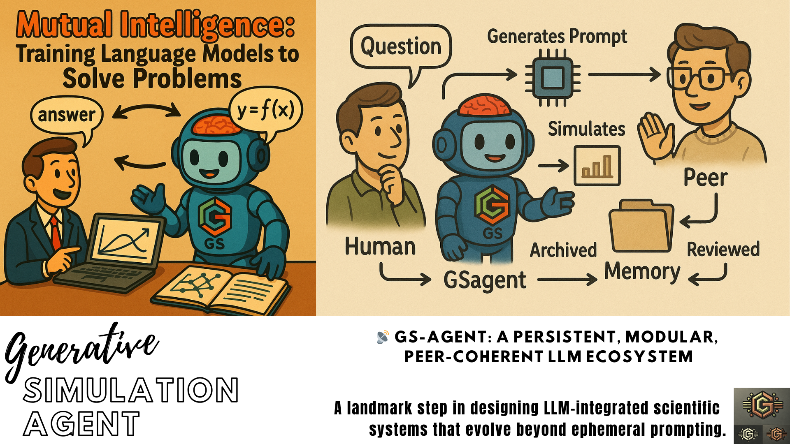

🤖 GS-Agent: Generative Simulation Intelligence Hub
Empowering mutual intelligence between communities and LLMs for scientific and technological reasoning.
📍Generative Simulation (GS) relies on GS-Agents (this project) and computational kernels that can be accessed via natural-language. Learn more on Language-First Computational Lab via GS Simulation core project.

🎨Credits: Olivier Vitrac
Table of Content
🤔 1 | Preamble
💡 We do not just want a smarter chatbot. We want to co-design a new epistemology, where language models become co-thinkers, not just coders.
✎ᝰ. 1.1 |Indistinguishability Through Formalism
The 🤖 GS-Agent project is part of the 🌱 Generative Simulation Initiative and is inviting an intelligence to co-emerge, not through divine spark nor brute force, but through structured reasoning, collective memory, and purpose.
Gödel’s theorems remind us that:
Any system that is expressive enough to capture arithmetic is incomplete.
Yet, that same system can still generate truth, even if it cannot enclose all of it.
By aligning our mind (a learner, generator of abstractions) and LLM architecture (a machine learner, trained on symbolic form and narrative), the 🤖 GS-Agent project proposes a shared formal substrate—a Generative Simulation language—from which truth-seeking can proceed, though never exhaustively.
In such a system, yes, reasoning may become indistinguishable—if:
We (humans and the LLM machines) share memory
We share purpose
We share self-correcting critique
🔭 That’s the grand dessein. Not to make machines human, or humans mechanical, but to build a third kind of intelligence—collective, modular, and evolving.
🫀 1.2 |The Core Problem
🤖ིྀ Large Language Models today are:
Amnesic — forget everything after a session.
Detached — don’t know what they created yesterday.
Non-purposive — can’t commit to long-term goals.
Non-integrative — can’t combine modular tools unless told to.
🏗 Meanwhile, science/engineering workflows are:
Cumulative — reuse and refine past results.
Modular — combine multiple tools, theories, simulations.
Purposeful — aimed at explaining, predicting, or solving real problems.
Reflexive — driven by peer feedback and critique.
✅ 1.3 | New Core Principles
💭 1.3.1 | Persistent Memory
📷 Every solved GS prompt, approach, or reasoning path must be stored in a long-term memory layer outside the LLM (GitHub, JSON, vector store, etc.).
This includes:
</> Final prompt + model response
👨🏻💻 Code and simulation outcomes
🔗 Links to upstream/downstream kernels
🏷️ Tags, ratings, purpose
🎼 1.3.2 | Composable Kernels
⚙️ Each tool (e.g.,
radigen,SFPPy,sig2dna) is a brick that can be composed, pipelined, or hybridized.
This requires:
🧾 A formal registry of callable kernels
🎛️ Interface schema + description of I/O
🧩 Composability maps: what links to what
🔱1.3.3 | Forkable Intelligence
👥 Users and agents should fork or remix existing solutions.
This requires:
🔖 Versioning of prompts, responses, and workflows
🌿 Fork trees or problem lineages
✍ Annotations from users (insight, bug, validation)
🎓 1.3.4 |Technical/ Scientific Peer Review
🤖💬 Chatbots are not just helpers—they become peers.
So:
❓A GS agent can submit a hypothesis + simulation + results
👌👍👎A human (or another agent) reviews, refines, or disputes
🗂️ The community archives, ranks, and promotes
═════════════════════════════════════════════════════════
🌍 2 | Purpose
Modern language models can code, simulate, and explain—but they forget everything between sessions 𓇢𓆸. This project builds a persistent, modular, and collaborative ecosystem where:
LLMs learn from structured prompts and outcomes
Humans and agents co-develop knowledge: every question and answer becomes training data for both humans and machines
Problems are archived, refined, and solved through modular kernels
We enable a Generative Simulation (GS) framework where science and engineering workflows are encoded into prompt chains, reviewed, and reused.
═════════════════════════════════════════════════════════
🎯 3 | Vision
📚 Archive valuable prompts, solutions, and forks
🔁 Link human questions to LLM + code + simulation + feedback
🧱 Register reusable bricks (kernels) that can compose simulations
✍️ Create a living memory of how problems were solved
🌎 Support real-world applications: materials safety, chemical kinetics, signal analysis, etc.
═════════════════════════════════════════════════════════
🧱 4 | Bricks (Simulation Kernels)
Each kernel declares:
Its callable functions
Input/output structure
Description and tags
See bricks/registry.json for current registered tools:
{
"radigen.solve": {
"inputs": ["mixture", "temp", "oxygen", "time"],
"outputs": ["concentration_curves", "radical_fluxes"],
"description": "Simulate oxidation kinetics in complex mixtures",
"tags": ["oxidation", "chemistry"]
}
}
Generative simulation embeds several kernels:
Project |
Description |
|---|---|
|
🍽️ Food packaging safety & migration prediction |
|
📡🧬 Radical oxidation simulation kernel |
|
🧪⚛️ Symbolic signal encoding (e.g., GC-MS analysis) |
|
🍕Soft-matter multiscale simulation kernel |
═════════════════════════════════════════════════════════
🧠 5 | Problem Archive
💬 5.1 | Examples of Questions
🔹 “How fast does methyl linoleate oxidize at 60°C?”
🔹 “What are the key SIG2DNA motifs for phthalates in GC-MS?”
🔹 “Can I simulate 3-day exposure of olive oil to recycled PET?”
Contributors can add problems in problems/, structured as:
{
"id": "P0001",
"question": "How does methyl oleate oxidize at 60°C over 3 days?",
"tools": ["radigen"],
"prompt": "simulate oxidation of methyl oleate at 60°C, 21% O2, 72h",
"response": "[output logs, figures, summary]",
"review": "pending",
"forks": []
}
☝️ 5.2 | Open Questions
The question may be open and remain unresolved for a while if no agent can resolve them.
👉The only requirement is that human (or LLM) posts a question with intent.
{
"id": "Q0001",
"question": "What is the impact of temperature cycling on methyl oleate oxidation?",
"proposed_tools": ["radigen"],
"priority": "high",
"context": "FAME oxidation during storage",
"status": "open"
}
═════════════════════════════════════════════════════════
🔁 6 | Mutual Intelligence Workflow
graph TD;
Human -->|Question| GSagent
GSagent -->|Generates Prompt| Kernel
Kernel -->|Simulates| Output
Output -->|Archived| Memory
Memory -->|Reviewed| Peer
Peer -->|Suggests Fork| GSagent
═════════════════════════════════════════════════════════
🧭 7 | Contribution Guidelines
🧪 Submit problems in
/problemswith prompt + intent🧱 Register or extend a kernel in
/bricks🔍 Review existing results or suggest forks
✨ Propose high-level goals or themes
All contributions—code, reasoning, or critique—are part of the mutual intelligence loop.
═════════════════════════════════════════════════════════
🗺️ 8 | Roadmap
Create kernel interface validators
Launch first problem sets
Add notebook support for reproducible prompts
Enable agent memory via GitHub Issues or SQLite
═════════════════════════════════════════════════════════
🙌 9 | Why This Matters
We envision a future where:
LLMs remember the best ways to simulate, solve, and reason
Scientists delegate not just tasks but frameworks of inquiry
Knowledge evolves as a network of dialogue, not static files
Help us build the machine that helps us think.
“The purpose of computation is insight, not numbers.” — Hamming
═════════════════════════════════════════════════════════
✅ 🔭 10 | What’s Next
🚧 Before the release of the first standards and their libraries under the 🌱 Generative Simulation Initiative, the current developments are drafted in the repo.
📁 Directory Structure
📂Folder/📄File |
📝Description |
|---|---|
|
Modular callable kernels ( |
|
A structured problem submission |
|
Executable agent interface to invoke registered kernels |
|
Template for peer review |
|
Notebook example |
|
Persistent logging of GSagent actions |
|
Documentation of functionalities: |
✊ Feedback Loop
Ask a question in
issues/The LLM agent tries to simulate or explain
We log the outcome and improve prompts, code, and documentation
Starting from version 0.15, LLM agents are equipped with Machine-Learning capacity to analyze accumulated results and to evaluate how the the new results fit or not within within the whole picture. The aim is to reduce redundancy and to generate early alert on exotic results.
🔁 Mutual Intelligence Loop
Human ⇄ Prompt ⇄ GSagent ⇄ Kernels ⇄ Output ⇄ Archive ⇄ Peer Review ⇄ Refined Knowledge
We start with prompts, but we move toward models that remember, reflect, and suggest new questions.